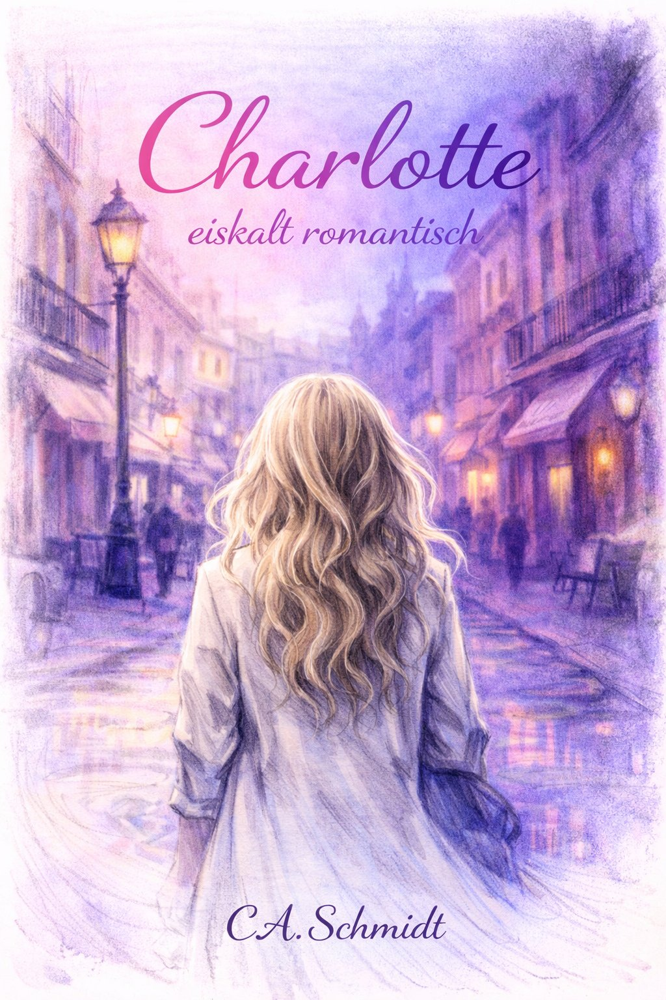
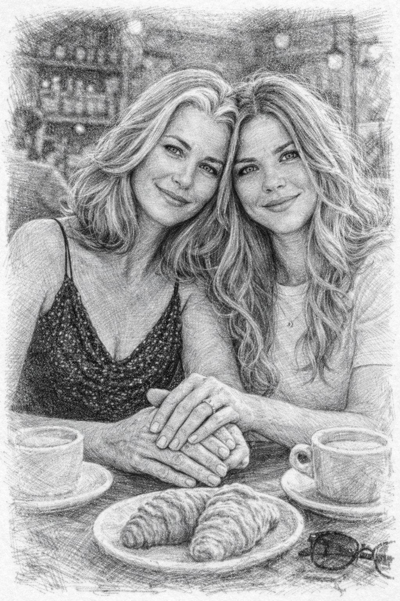

eiskalt romantisch
„Sie war nicht kalt. Sie zeigte ihre Wärme nur selten – und dann umso echter."

Charlotte ist zwanzig. Sie studiert in Berlin, lebt allein – und liebt Frauen. Nicht laut, nicht mit Label, nicht mit Erklärung. Einfach so. Als Tatsache.
Was folgt, ist kein Roman über das Entdecken der eigenen Sexualität. Das war längst entdeckt. Es ist eine Geschichte über Frauen die Charlotte begehrt, liebt, die ihr vertrauen – und über das was dabei mit allen Beteiligten passiert.
Charlotte beobachtet. Charlotte analysiert. Sie ist nie kalt – aber sie zeigt ihre Wärme nur denen, die sie verdienen. Und die bekommen alles.
Jede Frau in Charlottes Leben hat eine eigene Geschichte – und eine eigene Zeichnung.

Charlotte gibt sich kein Label. Sie gehört keiner Szene an, sucht keine Community, braucht keine Bestätigung von außen. Sie weiß wer sie ist – das war immer so.
Was sie sucht, sind Frauen die wissen wer sie sind. Frauen mit Haltung, mit Stil, mit einem Leben das ihnen gehört. Frauen die bereit sind, sich zu zeigen – nicht für alle, aber für jemanden der wirklich hinschaut.
„Ein Mann nimmt für sich. Ich nehme, um zu genießen. Man merkt, dass ich diese Frau will. Nicht eine Frau. Diese Frau."
Charlotte konsumiert nicht. Sie entdeckt. Jeden Leberfleck, jede Reaktion, jeden Moment wo eine Frau aufhört sich zu beobachten und einfach ist. Das ist der Moment, den sie liebt.
Dieses Buch richtet sich an Frauen die sich in Elke wiederfinden – in dem Hunger der lange nicht gestillt wurde. An Frauen die sich fragen, wie das wäre. Und an alle die verstehen, dass Liebe keine einzige Form hat.
Sie bestellte Tee.
Das registrierte ich, ohne zu wissen warum. Vielleicht weil es zu ihr passte – kein Kaffee, nichts Aufgeregtes. Tee, ruhig, selbstverständlich, als hätte sie das schon tausendmal in diesem oder irgendeinem anderen Café getan.
Sie legte den Mantel über die Stuhllehne, setzte sich mir gegenüber, schlug die Beine übereinander. Professionell, freundlich, leicht distanziert auf diese Art, die bei Menschen entstand, die viel mit Fremden zu tun hatten und gelernt hatten, eine angenehme Oberfläche zu halten.
Ich fand sie interessant.
Nicht wegen der Oberfläche. Wegen dem was darunter war – das ich noch nicht sehen konnte, aber spürte.
„Sie sagten, Sie hätten noch Fragen zur Wohnung."
„Eigentlich nur eine."
Die vollständige Geschichte erscheint 2026.
Der Roman erscheint 2026 bei epubli als Paperback und eBook. Schau bald wieder vorbei für den Kauflink.
Bei epubli vormerken Link folgt bei Erscheinen